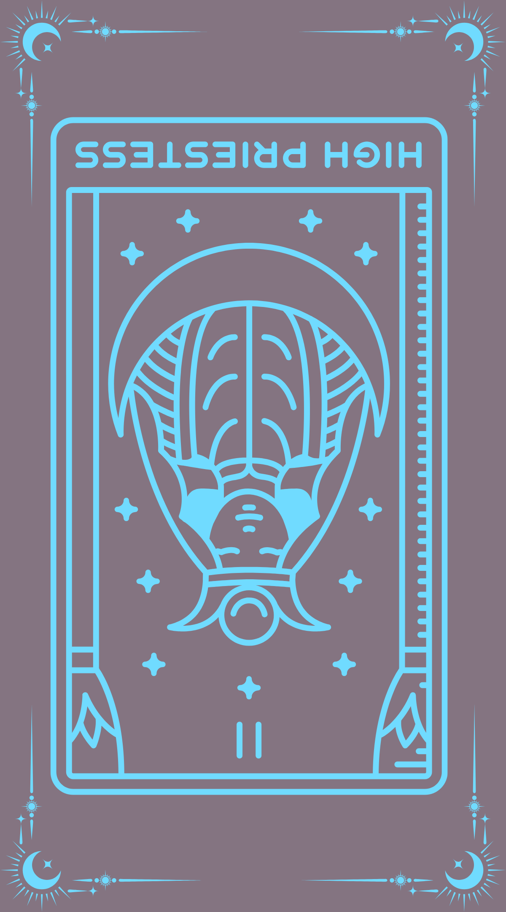

The High Priestess represents the innate wisdom within and our connection to our intuition. This card is a figure of mystery, deeply linked to the moon and the subconscious mind. When reversed, The High Priestess encourages you to not be swayed by outside influences and to be on the lookout for hidden agendas.
Challenge: Use the energy of the reversed High Priestess to hide something from your audience.